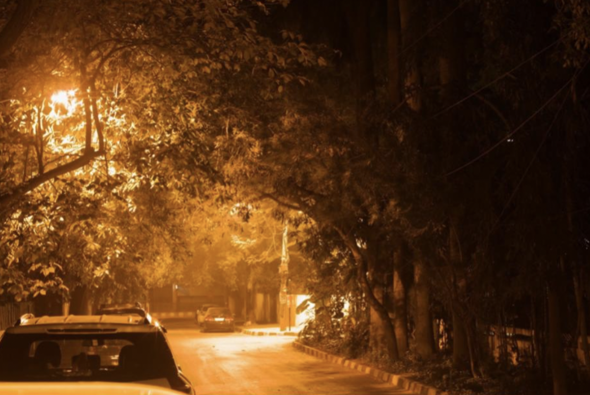
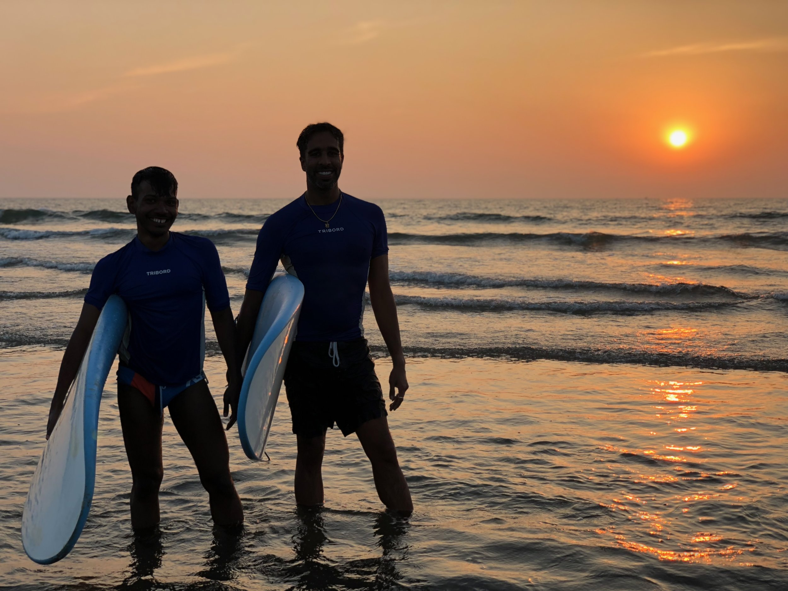
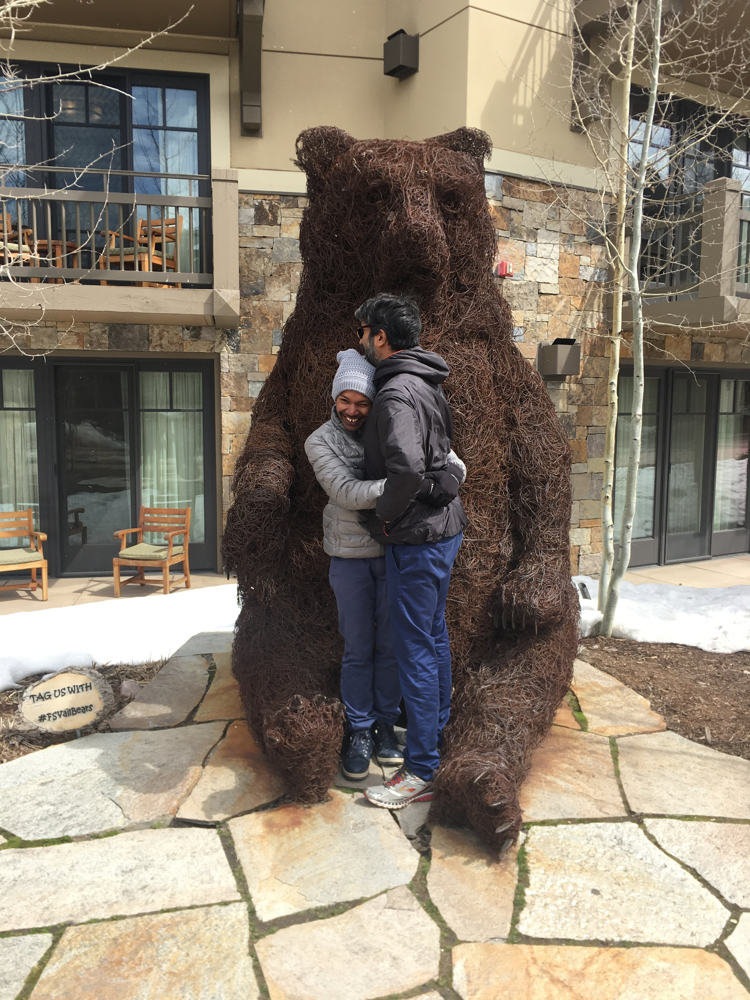
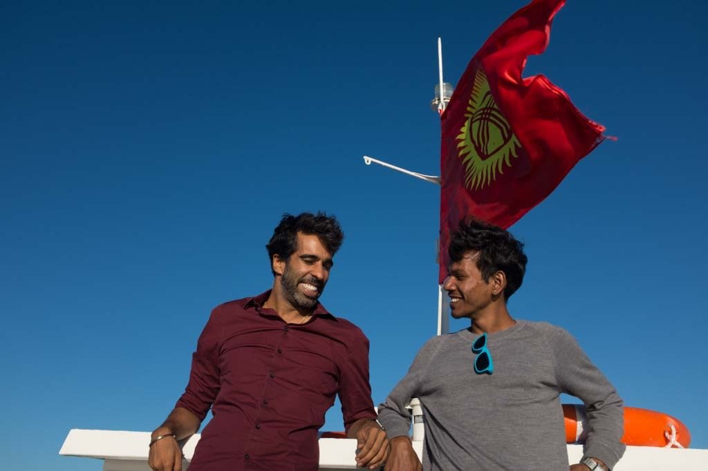
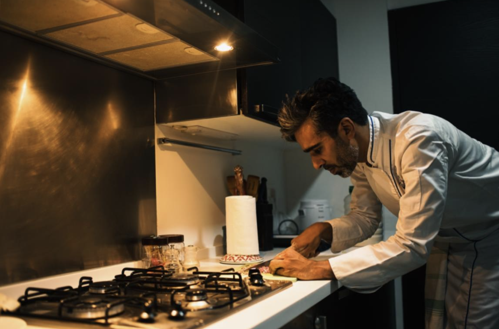
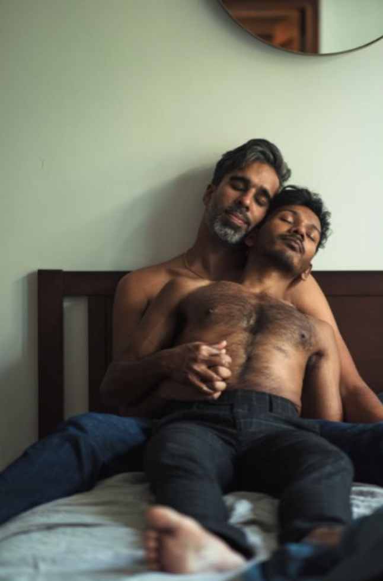
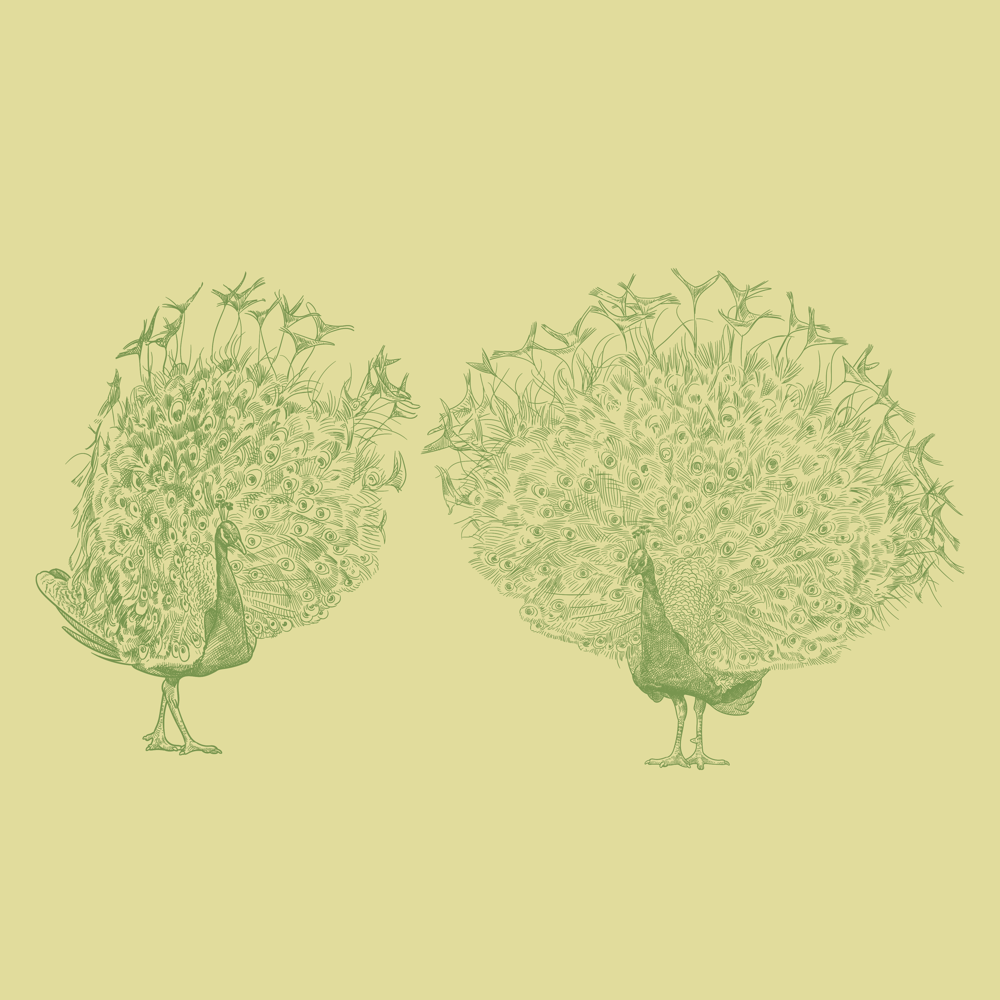

Our story began in Sadashivnagar,
under orange lights and in empty roads
A time when the land is very dry,
summer is yet to come,
and the rains are yet to start
By April, we were found, in that brief wisp of spring,
that Bangalore gets, sometimes, somewhere, somehow.

After that, what is love,
but a set of choices made
with a little more sparkle
a little more joy, maybe

a little more wonder, maybe
Thinking just
a few days ahead
of where you used to think before.

After that first year we thought,
‘This is it!’ Time to scurry home
And find our stories again.
Don’t let fling become fantasy
And fantasy becomes a pale version of itself
when reality takes its bitter hold,
and mashes it beyond all understanding.

But somehow this reality never got mashed
these days are still like that first day
when we wondered
was this fantasy
or is this a real life.
Just a real life we never imagined
a new, different kind of world

Telling any story takes choosing
an arbitrary beginning and end
In a grand story
that has no beginning and end
Especially stories that are about
concepts that we made up
The grand delusions of abstract nouns
Like falling in love.

